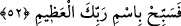

Zemahşeri der ki: “Hakka’l-yakin” tıpkı “o hakkıyla âlimdir” sözüne benzer. Âyetteki
bu ifâdeyle, Kur’an hakkında yapılmış mükemmel bir açıklama ve îzâh
kasdedilmektedir.
Kâşânî tefsirinde “hakka’l-yakin” ifâdesi “mahda’l-yakin ve sırfe’l-yakin” şeklinde
karşılanmıştır. Bu tıpkı “huve’l-âlimu, hakka’l-âlimu, cidde’l-âlimu/o hakkıyla âlimdir”
ifâdesinde olduğu gibidir. Bir başka ifâdeyle “o âlimin özüdür, hakîkatidir, içerisine
başka bir şey karışmamıştır” demektir.
Cüneyd Bağdadi (k.s.) şöyle der: Hakka’l-yakin, kulun kendisiyle hakkın mârifetini
elde ettiği şeydir. Bu, kulun, gayb âleminin sırlarını, görülen şeyleri müşâhede ettiği
gibi ayan beyân müşâhede etmesi, gizli kalan sırlara vâkıf olması ve onları doğru
biçimde haber vermesi demektir. Nitekim Sıddîk-ı Ekber (r.a.)’de bu hâl
gerçekleşmiştir. O, Peygamber Efendimiz’in hakîkatini müşâhede ettiğinden dolayı
Efendimiz (s.a.); “Nefsin için ne bıraktın ey Ebû Bekir?” diye sorduğunda o, “Allah’ı
ve Rasûlü’nü” cevâbını vermiştir.[80]
Böylece o, hakkı gerçek anlamda idrak etmiş olduğunu, Allah’tan başka herşeyden
kalben ilişkisini kestiğini ve onunla birlikte sıdka vakıf olduğunu haber vermektedir. Bu
ifâde üzerine Peygamberimiz (s.a.) ona bunun “nasıl olacağını ve kendisine neyin işâret
ettiğini” sormamıştır. Çünkü Peygamberimiz (s.a.) onun doğruluğunu ve doğrulukta
zirveye tırmanmış bulunduğunu biliyordu.
Peygamber Efendimiz (s.a.) Hârise’ye; “nasıl sabahladın ey Harise?” diye
sorduğunda o, “gerçek bir mümin olarak sabahladım” şeklinde cevap vererek îmânının
gerçek îman olduğunu haber vermiştir.[81] Peygamber Efendimiz (s.a.), kendisine bu
soruyu, onun gönlünde davasının büyüklüğünü bulduğu için sordu. Sonra da kendisi
hakkında neden böyle hüküm verildiğini haber verdiği için sordu. O cevabı aldıktan
sonra da “gerçeği bildin, devam et” buyurdu. Yâni îmânın hakîkatine giden yolu
bilmişsin; artık bu yoldan îmânın hakîkatine ulaşıncaya kadar yürümeye devam et” dedi.
Peygamber Efendimiz, Hz. Ebû Bekir’in hâlini ise kendisinden haber istemeksizin
kapalı görüyordu ve davasında doğru olduğunu biliyordu. İşte bu hakka’l-yakin
makamıdır. Yakin ise şüpheyi ortadan kaldıran bilginin adıdır. Bu nedenle Allah
Teâlâ’nın ilmi “yakin” ile vasıflandırılamaz.
52. O hâlde, ulu Rabbinin adını yüceltip noksanlıklardan tenzih et.
Allah Teâlâ’nın ism-i azimini zikrederek, bir başka ifâdeyle “subhanallah” diyerek
onu tesbih et. Böylece Allah’ı, hakkında uydurulmuş iftiralara rızâ göstermekten tenzih
et. Yine sana vahyettiklerine şükür olmak üzere O’nu tenzih et. Âyetteki “sebbih/tesbih
et” fiilinin mef’ûlü mahzuftur. “Bismi” kelimesindeki “bâ” harf-i cerri “istiâne/yardım